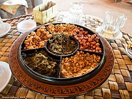

Tea Leaf Salad

Description
It is also known as Lahpet which is one of the most popular cuisines in
Myanmar, a country located in South East Asia.
Tea Leaf Salad is regarded as a national delicacy that plays a significant
role in Myanmar society, and remains a traditional gesture of hospitality
and is served to guests visiting a home.
Ingredients
- tomato
- Myanmar Crunchy Mix
- lemon
- fermented tea leaf dressing
- dried shrimp
- fish sauce
- cabbage
Steps
- Slice cabbage into thin pieces.
- Dice tomato
-
Add cabbage to a large bowl along with, dried shrimp, the tomato,
fermented tea leaf dressing, and Myanmar crunchy mix.
- Add a little bit of fish sauce.
-
Squeeze a little lemon juice over the salad and toss well to combine.